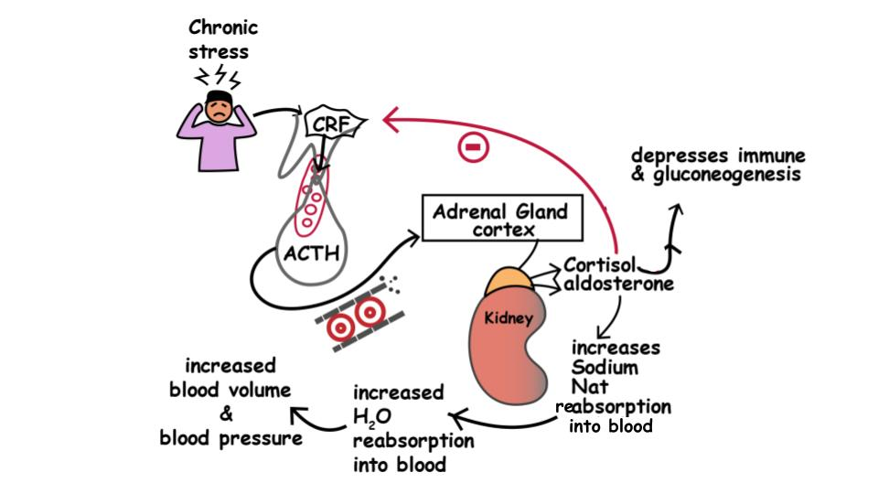

Vì Sao Tâm Trí Có Thể "Tắt Ngúm" Sự Cương Cứng Chỉ Trong 3 Giây: Cơ Chế Co Mạch Alpha-Adrenergic
Bạn đã bao giờ tự hỏi vì sao một người đàn ông hoàn toàn khỏe mạnh, vẫn có hiện tượng cương sinh lý buổi sáng (Nocturnal Penile Tumescence) rất tốt, nhưng lại có thể đột ngột mất đi độ cương cứng ngay khoảnh khắc một ý nghĩ lo lắng thoáng qua trong đầu khi bắt đầu lâm trận?
Trong tiết niệu học lâm sàng và thần kinh – nội tiết học (Dean & Lue, 2005), lên đến 60% các trường hợp rối loạn cương dương thứ phát và tình huống bắt nguồn không phải từ xơ vữa động mạch hay yếu cơ sàn chậu, mà từ một cơ chế sinh tồn tiến hóa bên trong Hệ Thần Kinh Tự Chủ và Trục Hạ đồi – Tuyến yên – Thượng thận (HPA Axis) của bạn:
- Điều Kiện Tiên Quyết Của Oxit Nitric Phó Giao Cảm: Để sự cương cứng diễn ra, não bộ của bạn phải cảm nhận được sự an toàn và hưng phấn xúc giác. Khi đó, các dây thần kinh hang thuộc hệ phó giao cảm mới giải phóng Oxit Nitric (NO), kích hoạt enzyme guanylate cyclase tạo ra cGMP làm giãn cơ trơn bè mạch bên trong vật hang, giúp các động mạch xoắn mở rộng và đón máu tràn vào.
- Quyền Phủ Quyết Sinh Tồn Của Hệ Giao Cảm: Ở trạng thái mặc định suốt hơn 22 tiếng mỗi ngày, dương vật được giữ ở trạng thái mềm nhờ các xung thần kinh Giao cảm (Sympathetic) phát ra liên tục ở mức nền thấp. Ngay khoảnh khắc bạn nảy sinh nỗi sợ ("Lỡ như mình lại mất độ cứng thì sao?" hoặc "Mình đã đủ cứng chưa?"), trung tâm cảnh báo nguy hiểm của não bộ—Hạch hạnh nhân (Amygdala)—sẽ xử lý áp lực tâm lý đó giống hệt như khi bạn đối mặt với một loài thú dữ!
- Khóa Chặt Mạch Máu Qua Thụ Thể Alpha-Adrenergic: Chỉ trong vài giây, các đầu dây thần kinh giao cảm giải phóng ồ ạt Norepinephrine (Noradrenaline) trực tiếp vào mô vật hang, đồng thời tuyến thượng thận bơm Epinephrine (Adrenaline) và Cortisol vào máu. Norepinephrine gắn chặt vào các Thụ thể Alpha-1 và Alpha-2 Adrenergic trên thành động mạch xoắn dương vật và cơ trơn vật hang—kích hoạt dòng ion canxi tràn vào tế bào và gây co thắt động mạch tức thì (Dean & Lue, 2005). Về mặt sinh hóa, hiện tượng này giống hệt như khi bạn nhảy xuống hồ nước đá lạnh buốt: máu lập tức bị rút khỏi vùng chậu để dồn về tim và cơ đùi lớn phục vụ phản xạ "chiến hay chạy".

Cái Bẫy Tâm Lý "Khán Giả Tự Phán Xét" (Spectatoring) & Dấu Ấn Trên Thiết Bị Đeo
Hai nhà nghiên cứu tiên phong trong y học tình dục William Masters và Virginia Johnson đã đặt ra thuật ngữ "Spectatoring" (Làm khán giả tự quan sát chính mình) để mô tả vòng lặp nhận thức giam cầm nam giới trong hội chứng lo âu thực hiện (Performance Anxiety): - Thay vì đắm mình vào xúc giác, hơi ấm và sự gắn kết tự nhiên với bạn đời, người đàn ông lại tách tâm trí ra khỏi cơ thể như một vị giám khảo khó tính—liên tục săm soi, chấm điểm và kiểm tra xem dương vật của mình có đang cứng hay không. - Bởi vì hành vi tự đánh giá kích hoạt mạnh mẽ vỏ não trước trán lưng bên và hạch hạnh nhân bên phải, trạng thái "làm khán giả" giữ cho nồng độ norepinephrine giao cảm luôn ở mức cao, biến nỗi sợ mất độ cương trở thành lời tiên tri tự ứng nghiệm!
Sự Giằng Co Thần Kinh Tự Chủ Hiển Thị Trên Đồng Hồ Thông Minh Như Thế Nào?
Nếu bạn đang sử dụng WHOOP, Oura Ring, Garmin hoặc Apple Watch, bạn có thể quan sát trực diện cuộc kéo co sinh học giữa căng thẳng giao cảm và sự sẵn sàng phó giao cảm ngay trên biểu đồ sinh trắc học của mình:
| Chiều Kích Sinh Lý Học | Trạng Thái Sẵn Sàng Phó Giao Cảm ("Thư Giãn & Kết Nối") | Trạng Thái Lo Âu Giao Cảm ("Chiến Hay Chạy") |
|---|---|---|
| Chất Dẫn Truyền Thần Kinh Chính | Oxit Nitric (NO), Acetylcholine, Oxytocin, Dopamine. | Norepinephrine, Epinephrine (Adrenaline), Cortisol. |
| Cơ Trơn & Động Mạch Dương Vật | Giãn Mạch (Vasodilation): Động mạch xoắn mở rộng (gấp 2 lần đường kính); khoang hang đầy máu đạt >100 mmHg. |
Co Mạch Alpha-1 Adrenergic: Cơ trơn bè mạch co rút chặt; dòng máu động mạch bị khóa lại ngay từ đầu vào. |
| Ngưỡng Phản Xạ Xuất Tinh | Ngưỡng chịu đựng cao; trung tâm tiết tinh tủy sống (T10–L2) điềm tĩnh và ổn định. |
Quá Nhạy Cảm: Trương lực giao cảm kích hoạt sớm pha tiết tinh, dễ gây xuất tinh sớm do lo âu. |
| Dấu Ấn Trên Thiết Bị Đeo (Wearables) | Chỉ số HRV (RMSSD) đạt hoặc vượt mức nền 30 ngày; RHR buổi tối thấp; Giấc ngủ REM sâu & cương sáng rõ rệt. | Chỉ số HRV sụt giảm (-15% đến -35%), RHR tối tăng (+5 đến +10 bpm), điểm Stress ban ngày cao, giấc ngủ REM đứt quãng. |
Giải Pháp Lâm Sàng 1: Giao Thức Viết Tự Do Giải Tỏa Tâm Trí "Mind Cleaner"
Làm thế nào để bạn quét sạch những suy nghĩ lo âu về phong độ và áp lực công việc ra khỏi vỏ não trước trán trước khi bước vào không gian riêng tư?
Trong chuỗi nghiên cứu lâm sàng nổi tiếng của Giáo sư tâm lý học James Pennebaker (Pennebaker & Beattie, 2001) cùng công trình đột phá đăng trên tạp chí Science của các nhà khoa học nhận thức Đại học Chicago (Ramirez & Beilock, 2011, PMID: 21233387), các nhà nghiên cứu đã chứng minh rằng việc dành 8 đến 10 phút Viết Tự Do Không Kiểm Duyệt (Expressive Writing) ngay trước một sự kiện áp lực cao giúp giải phóng bộ nhớ làm việc (working memory) khỏi các vòng lặp lo âu và làm giảm rõ rệt hoạt động quá mức của hạch hạnh nhân (amygdala).
Được chuẩn hóa cho sức khỏe sinh lý nam giới dưới tên gọi Giao Thức Thanh Lọc Tâm Trí (Mind Cleaner), phương pháp viết tự do hoạt động giống như thao tác giải phóng bộ nhớ RAM đang bị treo trên máy tính, giúp não bộ của bạn thoát khỏi chế độ tự phán xét để quay về với cảm nhận xúc giác nguyên bản.
Giao Thức Thực Hành 8 Phút: Kết Hợp "Mind Cleaner" & Tiếng Thở Dài Sinh Lý (Physiological Sigh)
Hãy thực hiện quy trình thần kinh – sinh học gồm 2 phần này vào buổi tối sau một ngày làm việc căng thẳng hoặc 30–60 phút trước khi gần gũi bạn đời:
Phần A — 6 Phút "Mind Cleaner" Xả Rác Nhận Thức Không Kiểm Duyệt
- Đặt Hẹn Giờ 6 Phút Trong Không Gian Riêng Tư: Mở một trang ghi chú trống trên điện thoại hoặc lấy một tờ giấy trắng trong phòng kín hoàn toàn riêng tư.
- Viết Liên Tục Không Ngừng Nghỉ (Quy Tắc 5 Giây): Trong suốt 6 phút, hãy viết tuôn trào mọi áp lực công việc, nỗi lo tài chính, sự mệt mỏi hay bất kỳ nỗi sợ thầm kín nào về chuyện chăn gối đang xuất hiện trong đầu. Tuyệt đối không dừng bút hoặc dừng gõ phím quá 5 giây. Nếu đầu óc chợt trống rỗng, hãy lặp lại cụm từ "Tôi đang giải phóng tâm trí" cho đến khi ý nghĩ tiếp theo trào ra.
- Không Chỉnh Sửa, Không Tự Phán Xét: Bỏ qua hoàn toàn chính tả, ngữ pháp hay sự mạch lạc. Sẽ không một ai đọc những dòng này. Các nghiên cứu chụp cộng hưởng từ chức năng fMRI (Lieberman và cộng sự, 2007) chỉ ra rằng hành động chuyển hóa những nỗi sợ mơ hồ trong hạch hạnh nhân thành con chữ cụ thể giúp làm dịu tức thì phản ứng báo động của hệ giao cảm.
- Nghi Thức Hủy Bỏ Hoàn Toàn: Ngay khi chuông báo 6 phút vang lên, đừng đọc lại những gì vừa viết. Hãy xé vụn tờ giấy bỏ vào thùng rác hoặc xóa vĩnh viễn tệp ghi chú ngay lập tức. Hành động xóa bỏ trực quan này gửi tín hiệu dứt khoát tới hệ thần kinh rằng vòng lặp lo âu đã được khép lại.
Phần B — 2 Phút Chuyển Mạch Phế Vị Bằng "Tiếng Thở Dài Sinh Lý" (Giao Thức Đại Học Stanford)
Ngay sau khi xóa bản ghi chú Mind Cleaner, hãy chuyển hệ thần kinh ngoại biên từ trạng thái co mạch giao cảm sang giãn mạch phó giao cảm bằng kỹ thuật Tiếng Thở Dài Sinh Lý Theo Chu Kỳ (Cyclic Physiological Sigh)—phương pháp đã được thử nghiệm lâm sàng đối chứng ngẫu nhiên của Tiến sĩ Andrew Huberman và Tiến sĩ David Spiegel tại Trường Y Đại học Stanford (Balban và cộng sự, 2023, Cell Reports Medicine, PMID: 36630953) chứng minh là kỹ thuật hô hấp giúp giảm căng thẳng thần kinh tự chủ nhanh nhất theo thời gian thực:
1. Hít Vào Kép Qua Mũi (2 Nhịp Liên Tiếp): Hít một hơi sâu qua mũi cho đến khi phổi đầy khoảng 85%, sau đó—không thở ra—hãy hít bồi thêm một nhịp ngắn thứ hai qua mũi để làm căng phồng tối đa các túi phế nang nhỏ li ti trong phổi.
2. Thở Ra Dài Và Chậm Qua Miệng: Thở ra thật êm, chậm và hết sạch không khí qua đôi môi khép hờ trong 6 đến 8 giây (dài gấp đôi pha hít vào), đồng thời chủ động thả rơi hai bờ vai, cơ hàm và buông lỏng hoàn toàn sàn chậu (Kegel Ngược).
3. Lặp Lại 6 Đến 10 Chu Kỳ (Khoảng 2 Phút): Chỉ sau 90 giây, các thụ thể áp suất (baroreceptors) tại quai động mạch chủ sẽ truyền tín hiệu về thân não kích hoạt mạnh mẽ Dây thần kinh phế vị (Vagus Nerve), kéo nhịp tim giảm xuống 5 đến 12 bpm và khôi phục hoàn hảo môi trường Oxit Nitric phó giao cảm để cơ thể bạn thăng hoa tự nhiên.
Tài Liệu Tham Khảo & Nguồn Y Khoa
- Dean, R. C., & Lue, T. F. (2005). Physiology of penile erection and pathophysiology of erectile dysfunction. Urologic Clinics of North America, 32(4), 379–395. https://pubmed.ncbi.nlm.nih.gov/16226685/
- Balban, M. Y., Neri, E., Kogon, M. M., Weed, L., Nouriani, B., Jo, B., ... & Huberman, A. D. (2023). Brief structured respiration practices enhance mood and reduce physiological arousal. Cell Reports Medicine, 4(1), 100895. https://pubmed.ncbi.nlm.nih.gov/36630953/
- Ramirez, G., & Beilock, S. L. (2011). Writing about testing worries boosts exam performance in the classroom. Science, 331(6014), 211–213. https://pubmed.ncbi.nlm.nih.gov/21233387/
- Baikie, K. A., & Wilhelm, K. (2005). Emotional and physical health benefits of expressive writing. Advances in Psychiatric Treatment, 11(5), 338–346. https://pubmed.ncbi.nlm.nih.gov/18509580/